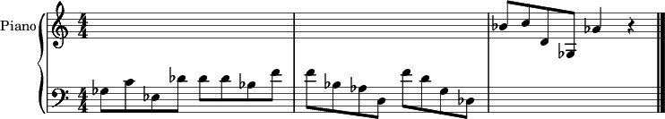
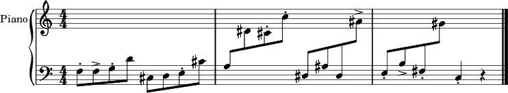
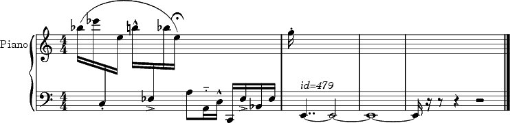
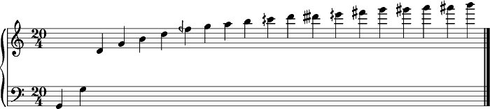
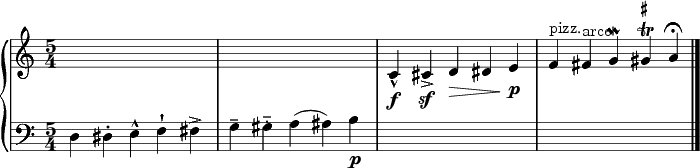

Any of the following may be reproduced by saving the example to a file and using the so-called text file or command line interface to process it (see Text File Interface and Command Line Interface for more information). When an output isn't specified in the file, this must be given in the Lisp function call or at the command line. Some examples are:
Example 9.17. Text Input Commands (From Lisp)
(fomus "/directory/file.fms") ; use values in file (fomus "/directory/file.fms" :output :musicxml) ; output to MusicXML format (fomus "/directory/file.fms" :output '(:lilypond :view t)) ; output to LilyPond and open for viewing
Example 9.18. Text Input Commands (Command Line)
# print help message fomus -h # use values in file fomus /directory/file.fms # output to MusicXML fomus -x /directory/file.fms # output to LilyPond and open for viewing fomus -lw /directory/file.fms
Example 9.19. Simple Text Input Example
INIT :output :lilypond INIT :filename "/mydir/output" PART 1 :name "Piano" :instr :piano NOTE 1 :voice 1 :off 0 :dur 1/2 :note 54 NOTE 1 :voice 1 :off 1/2 :dur 1/2 :note 60 NOTE 1 :voice 1 :off 1 :dur 1/2 :note 51 NOTE 1 :voice 1 :off 3/2 :dur 1/2 :note 61 NOTE 1 :voice 1 :off 2 :dur 1/2 :note 61 NOTE 1 :voice 1 :off 5/2 :dur 1/2 :note 61 NOTE 1 :voice 1 :off 3 :dur 1/2 :note 58 NOTE 1 :voice 1 :off 7/2 :dur 1/2 :note 65 NOTE 1 :voice 1 :off 4 :dur 1/2 :note 65 NOTE 1 :voice 1 :off 9/2 :dur 1/2 :note 58 NOTE 1 :voice 1 :off 5 :dur 1/2 :note 56 NOTE 1 :voice 1 :off 11/2 :dur 1/2 :note 50 NOTE 1 :voice 1 :off 6 :dur 1/2 :note 65 NOTE 1 :voice 1 :off 13/2 :dur 1/2 :note 62 NOTE 1 :voice 1 :off 7 :dur 1/2 :note 55 NOTE 1 :voice 1 :off 15/2 :dur 1/2 :note 49 NOTE 1 :voice 1 :off 8 :dur 1/2 :note 70 NOTE 1 :voice 1 :off 17/2 :dur 1/2 :note 72 NOTE 1 :voice 1 :off 9 :dur 1/2 :note 62 NOTE 1 :voice 1 :off 19/2 :dur 1/2 :note 54 NOTE 1 :voice 1 :off 10 :dur 1 :note 68
Output
Example 9.20. Staccato and Accent Marks
INIT :output (:lilypond :view t) INIT :filename "/tmp/output" PART 1 :name "Piano" :instr :piano NOTE 1 :voice 1 :off 0 :dur 0.5 :note 53 :marks (:staccato) NOTE 1 :voice 1 :off 0.5 :dur 0.5 :note 53 :marks (:accent) NOTE 1 :voice 1 :off 1 :dur 0.5 :note 55 :marks (:staccato) NOTE 1 :voice 1 :off 1.5 :dur 0.5 :note 62 NOTE 1 :voice 1 :off 2 :dur 0.5 :note 49 NOTE 1 :voice 1 :off 2.5 :dur 0.5 :note 50 NOTE 1 :voice 1 :off 3 :dur 0.5 :note 52 :marks (:staccato) NOTE 1 :voice 1 :off 3.5 :dur 0.5 :note 61 NOTE 1 :voice 1 :off 4 :dur 0.5 :note 57 NOTE 1 :voice 1 :off 4.5 :dur 0.5 :note 63 NOTE 1 :voice 1 :off 5 :dur 0.5 :note 61 :marks (:staccato) NOTE 1 :voice 1 :off 5.5 :dur 0.5 :note 72 :marks (:staccato) NOTE 1 :voice 1 :off 6 :dur 0.5 :note 51 NOTE 1 :voice 1 :off 6.5 :dur 0.5 :note 58 NOTE 1 :voice 1 :off 7 :dur 0.5 :note 51 NOTE 1 :voice 1 :off 7.5 :dur 0.5 :note 70 :marks (:accent) NOTE 1 :voice 1 :off 8 :dur 0.5 :note 52 :marks (:staccato) NOTE 1 :voice 1 :off 8.5 :dur 0.5 :note 59 :marks (:accent) NOTE 1 :voice 1 :off 9 :dur 0.5 :note 54 :marks (:staccato) NOTE 1 :voice 1 :off 9.5 :dur 0.5 :note 68 NOTE 1 :voice 1 :off 10 :dur 1 :note 48 :marks (:staccato)
Output
Example 9.21. Percussion
PART prc :name "Percussion" :instr (:percussion :percs ((MAKE-PERC :sym :woodblock :staff 1 :voice 1 :note e4 :autodur t :midinote-im nil :midinote-ex nil) \
(MAKE-PERC :sym :snaredrum :staff 1 :voice 1 :note a3 :autodur t :midinote-im nil :midinote-ex nil)))
NOTE prc :voice 1 :off 0 :dur 1/2 :note :woodblock
NOTE prc :voice 1 :off 1/2 :dur 1/2 :note :woodblock
NOTE prc :voice 1 :off 1 :dur 1/2 :note :woodblock
NOTE prc :voice 1 :off 3/2 :dur 1/2 :note :snaredrum
NOTE prc :voice 1 :off 2 :dur 1/2 :note :snaredrum
NOTE prc :voice 1 :off 5/2 :dur 1/2 :note :woodblock
NOTE prc :voice 1 :off 3 :dur 1/2 :note :snaredrum
NOTE prc :voice 1 :off 7/2 :dur 1/2 :note :woodblock
NOTE prc :voice 1 :off 4 :dur 1/2 :note :woodblock
NOTE prc :voice 1 :off 9/2 :dur 1/2 :note :woodblock
NOTE prc :voice 1 :off 5 :dur 1/2 :note :woodblock
NOTE prc :voice 1 :off 11/2 :dur 1/2 :note :woodblock
NOTE prc :voice 1 :off 6 :dur 1/2 :note :woodblock
NOTE prc :voice 1 :off 13/2 :dur 1/2 :note :snaredrum
NOTE prc :voice 1 :off 7 :dur 1/2 :note :woodblock
NOTE prc :voice 1 :off 15/2 :dur 1/2 :note :snaredrum
NOTE prc :voice 1 :off 8 :dur 1/2 :note :snaredrum
NOTE prc :voice 1 :off 17/2 :dur 1/2 :note :snaredrum
NOTE prc :voice 1 :off 9 :dur 1/2 :note :woodblock
NOTE prc :voice 1 :off 19/2 :dur 1/2 :note :woodblock
NOTE prc :voice 1 :off 10 :dur 1/2 :note :snaredrum
Output

Example 9.22. Articulations
;; Example by Rob Canning init :output (:lilypond :view t) part 1 :name "Piano" :instr :piano (note 1 :off 0 :dur 0.25 :note 82 :marks (:ignore)) (note 1 :off 0.25 :dur 0.25 :note 87 :marks (:ignore)) (note 1 :off 0.5 :dur 0.25 :note 48 :marks (:staccato)) (note 1 :off 0.75 :dur 0.25 :note 76 :marks (:ignore)) (note 1 :off 1 :dur 0.25 :note 83 :marks (:marcato)) (note 1 :off 1.25 :dur 0.25 :note 51 :marks (:accent)) (note 1 :off 1.5 :dur 0.25 :note 82 :marks (:ignore)) (note 1 :off 1.75 :dur 0.25 :note 76 :marks (:endslur- (:fermata))) (note 1 :off 2 :dur 0.5 :note 57 :marks (:ignore)) (note 1 :off 2.5 :dur 0.25 :note 45 :marks (:portato)) (note 1 :off 2.75 :dur 0.25 :note 50 :marks (:marcato)) (note 1 :off 3 :dur 0.25 :note 36 :marks (:ignore)) (note 1 :off 3.25 :dur 0.25 :note 51 :marks (:accent)) (note 1 :off 3.5 :dur 0.25 :note 46 :marks (:ignore)) (note 1 :off 3.75 :dur 0.25 :note 51 :marks (:ignore)) (note 1 :off 4 :dur 0.25 :note 79 :marks (:staccato)) (note 1 :off 4.25 :dur 8 :note 40 :marks (:startslur- (:textnote "id=479")))
Output
Example 9.23. More Percussion
PART p1 :name "Perc" \
:instr (:percussion :percs ((:snare-drum :note a3) \
(:low-wood-block :note e4) (:high-wood-block :note g4) \
(MAKE-PERC :rim-shot :staff 1 :voice 1 :note c4 :autodur t :midinote-im nil :midinote-ex 40))) \
:opts (:midi-filename "part1")
NOTE p1 :voice 1 :off 1 :dur (1/2 -100) :note :snare-drum
NOTE p1 :voice 1 :off 1 :dur 1/2 :note :snare-drum :marks (:sf :accent)
NOTE p1 :voice 1 :off 5/2 :dur 1/2 :note :snare-drum :marks (:p)
NOTE p1 :voice 1 :off 4 :dur 1/2 :note :snare-drum
NOTE p1 :voice 1 :off 11/2 :dur 1/2 :note :snare-drum
NOTE p1 :voice 1 :off 6 :dur 1/2 :note :snare-drum :marks (:sf :accent)
NOTE p1 :voice 1 :off 15/2 :dur 1/2 :note :snare-drum
NOTE p1 :voice 1 :off 8 :dur 1/2 :note :snare-drum :marks (:sf :accent)
NOTE p1 :voice 1 :off 17/2 :dur 1/2 :note :snare-drum
NOTE p1 :voice 1 :off 10 :dur (1/2 -100) :note :high-wood-block
NOTE p1 :voice 1 :off 10 :dur 1/2 :note :low-wood-block
NOTE p1 :voice 1 :off 10.5 :dur 1/2 :note :low-wood-block
NOTE p1 :voice 1 :off 11 :dur 1/2 :note :low-wood-block
NOTE p1 :voice 1 :off 11.5 :dur 1/2 :note :low-wood-block
NOTE p1 :voice 1 :off 12 :dur 1/2 :note :high-wood-block :marks (:sf :accent)
NOTE p1 :voice 1 :off 12.5 :dur 1/2 :note :low-wood-block
NOTE p1 :voice 1 :off 13 :dur 1/2 :note :low-wood-block
NOTE p1 :voice 1 :off 13.5 :dur 1/2 :note :low-wood-block
NOTE p1 :voice 1 :off 14 :dur 1/2 :note :low-wood-block
Output

Example 9.24. Overtone Series (using Quartertones)
INIT :output '(:lilypond :view t) INIT :filename "overser" INIT :quartertones t PART h :name nil :instr :piano TIMESIG :off 0 :time (20 4) NOTE h :voice 1 :off 0 :dur 1 :note 42.999996 NOTE h :voice 1 :off 1 :dur 1 :note 54.999996 NOTE h :voice 1 :off 2 :dur 1 :note 62.019547 NOTE h :voice 1 :off 3 :dur 1 :note 67.0 NOTE h :voice 1 :off 4 :dur 1 :note 70.86313 NOTE h :voice 1 :off 5 :dur 1 :note 74.01955 NOTE h :voice 1 :off 6 :dur 1 :note 76.688255 NOTE h :voice 1 :off 7 :dur 1 :note 79.0 NOTE h :voice 1 :off 8 :dur 1 :note 81.03909 NOTE h :voice 1 :off 9 :dur 1 :note 82.86313 NOTE h :voice 1 :off 10 :dur 1 :note 84.513176 NOTE h :voice 1 :off 11 :dur 1 :note 86.01955 NOTE h :voice 1 :off 12 :dur 1 :note 87.40528 NOTE h :voice 1 :off 13 :dur 1 :note 88.68826 NOTE h :voice 1 :off 14 :dur 1 :note 89.88269 NOTE h :voice 1 :off 15 :dur 1 :note 91.0 NOTE h :voice 1 :off 16 :dur 1 :note 92.04956 NOTE h :voice 1 :off 17 :dur 1 :note 93.03909 NOTE h :voice 1 :off 18 :dur 1 :note 93.97514 NOTE h :voice 1 :off 19 :dur 1 :note 94.86313
Output
Example 9.25. Marks 1
INIT :output '(:lilypond :view t) INIT :filename "marks1" PART h :name nil :instr :piano TIMESIG :off 0 :time (5 4) NOTE h :voice 1 :off 0 :dur 1 :note 50 :marks (:IGNORE) NOTE h :voice 1 :off 1 :dur 1 :note 51 :marks (:STACCATO) NOTE h :voice 1 :off 2 :dur 1 :note 52 :marks (:MARCATO) NOTE h :voice 1 :off 3 :dur 1 :note 53 :marks (:STACCATISSIMO) NOTE h :voice 1 :off 4 :dur 1 :note 54 :marks (:ACCENT) NOTE h :voice 1 :off 5 :dur 1 :note 55 :marks (:TENUTO) NOTE h :voice 1 :off 6 :dur 1 :note 56 :marks (:PORTATO) NOTE h :voice 1 :off 7 :dur 1 :note 57 :marks (:STARTSLUR-) NOTE h :voice 1 :off 8 :dur 1 :note 58 :marks (:ENDSLUR-) NOTE h :voice 1 :off 9 :dur 1 :note 59 :marks (:P) NOTE h :voice 1 :off 10 :dur 1 :note 60 :marks (:F :MARCATO) NOTE h :voice 1 :off 11 :dur 1 :note 61 :marks (:SF :ACCENT) NOTE h :voice 1 :off 12 :dur 1 :note 62 :marks (:STARTWEDGE>) NOTE h :voice 1 :off 13 :dur 1 :note 63 NOTE h :voice 1 :off 14 :dur 1 :note 64 :marks (:ENDWEDGE> :P) NOTE h :voice 1 :off 15 :dur 1 :note 65 :marks (:PIZZ) NOTE h :voice 1 :off 16 :dur 1 :note 66 NOTE h :voice 1 :off 17 :dur 1 :note 67 :marks (:MORDENT) NOTE h :voice 1 :off 18 :dur 1 :note 68 :marks ((:TRILL 70)) NOTE h :voice 1 :off 19 :dur 1 :note 69 :marks (:FERMATA)
Output
Example 9.26. Marks 2
INIT :output '(:lilypond :view t)
INIT :filename "marks2"
PART z :name nil :instr :piano
TIMESIG :off 0 :time (5 4)
NOTE z :voice 1 :off 0 :dur 2 :note 50 :marks (:tremolo)
NOTE z :voice 1 :off 2 :dur 2 :note 52 :marks ((:tremolo 1/2))
NOTE z :voice 1 :off 5 :dur 1 :note 55 :marks ((:glissando :after))
NOTE z :voice 1 :off 6 :dur 1 :note 56
NOTE z :voice 1 :off 7 :dur 1 :note 57 :marks ((:breath :after))
NOTE z :voice 1 :off 8 :dur 1 :note 58 :marks ((:notehead :x))
NOTE z :voice 1 :off 9 :dur 1 :note 59 :marks ((:textnote ":("))
NOTE z :voice 1 :off 10 :dur 1 :note 60 :marks ((:textnote ":)"))
NOTE z :voice 1 :off 11 :dur 1 :note 61 :marks ((:textnote "L.H."))
NOTE z :voice 1 :off 12 :dur 1 :note 62 :marks ((:textdyn "pppppppppp"))
NOTE z :voice 1 :off 13 :dur 1 :note 63
NOTE z :voice 1 :off 14 :dur 1 :note 64 :marks ((:texttempo "Fast"))
NOTE z :voice 1 :off 15 :dur 1 :note 65
NOTE z :voice 1 :off 16 :dur 1 :note 66 :marks ((:starttext- "rit." :up))
NOTE z :voice 1 :off 17 :dur 1 :note 67
NOTE z :voice 1 :off 18 :dur 1 :note 68
NOTE z :voice 1 :off 19 :dur 1 :note 69 :marks (:endtext-)
Output